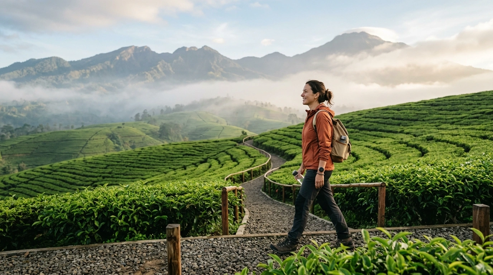

Kegiatan team building corporate di hamparan rumput hijau Kebun Teh Wonosari Malang.
Rutinitas pekerjaan kantor berulang, tenggat waktu ketat, serta tuntutan target bulanan yang tinggi sering kali memicu kejenuhan (burnout) berkepanjangan bagi karyawan. Ketika semangat kerja menurun, kekompakan tim dan produktivitas perusahaan pun turut terdampak. Mengadakan program outbound team building dan corporate gathering di alam terbuka seperti Outbound Indonesia hadir sebagai solusi strategis untuk menyegarkan pikiran sekaligus mempererat kolaborasi antar tim.
Lingkungan pegunungan yang asri pada ketinggian 1.100 MDPL terbukti secara psikologis mampu membebaskan karyawan dari stres perkotaan, membuat proses stimulasi kepemimpinan dan kerjasama menjadi jauh lebih efektif. Berikut adalah 5 manfaat utama mengadakan kegiatan team building perusahaan di Kebun Teh Wonosari:
1. Memecah Barrier Komunikasi Antar Hirarki
Di lingkungan kantor formal, sekat jabatan antara jajaran manajemen, kepala divisi, dan staf sering kali membatasi keterbukaan komunikasi. Melalui simulasi outbound di lapangan terbuka, semua jenjang struktur organisasi melebur menjadi satu tim pembelajar. Peserta diajak bahu-membahu menyelesaikan misi game tanpa melihat latar belakang posisi kerja, menciptakan komunikasi dua arah yang cair, jujur, dan menyenangkan.
2. Meningkatkan Resolusi Masalah & Kreativitas Berpikir
Game outbound seperti problem-solving ropes course, pipa bocor, dan strategi paintball memaksa tim untuk berpikir kritis di luar kebiasaan (out of the box). Terjebak dalam simulasi berbatas waktu menuntut peserta membagi peran, menyusun strategi darurat, dan beradaptasi dengan cepat. Keterampilan analisis dan pengambilan keputusan cepat di lapangan outbound ini terbukti dapat ditransfer secara positif saat menghadapi krisis di dunia kerja nyata.
3. Nature Therapy: Mengurangi Stres Kerja dengan Udara Pegunungan
Paparan pemandangan hijau kebun teh seluas 1.140 hektar dan hirupan udara segar berkadar oksigen tinggi di lereng Gunung Arjuno bertindak sebagai terapi alam (ecotherapy). Penelitian neurosains menunjukkan bahwa berada di alam terbuka selama beberapa jam dapat menurunkan kadar hormon kortisol (penyebab stres) hingga 30%, meredakan kelelahan mental, dan mengembalikan fokus konsentrasi karyawan.
4. Menumbuhkan Rasa Saling Percaya (Trust Building)
Kepercayaan (trust) adalah fondasi utama dari sebuah super-team. Dalam wahana outbound ketangkasan seperti High Ropes atau Blind Walk, seseorang harus memercayakan keselamatan atau arah langkahnya sepenuhnya kepada petunjuk rekan tim. Pengalaman emosional ini membangun ikatan batin (bonding) yang kuat antar rekan kerja sehingga tercipta rasa saling menghargai dan mendukung satu sama lain di tempat kerja.
5. Memperkuat Loyalitas Karyawan & Retensi Talenta
Perusahaan yang secara rutin memberikan apresiasi berupa kegiatan gathering dan kebersamaan di tempat wisata yang nyaman membuat karyawan merasa dihargai secara personal. Dampak positifnya adalah meningkatnya rasa memiliki (sense of belonging) terhadap perusahaan, menurunkan tingkat turnover karyawan, dan membentuk budaya kerja yang positif serta humanis.

Tim HR & Outbound Consultant Wonosari
Konsultan pengembangan SDM dan fasilitator outbound berpengalaman yang telah merancang ratusan event gathering corporate untuk perusahaan nasional dan multinasional di Outbound Indonesia Malang.
Artikel Terkait

10 Perlengkapan Wajib Outbound di Pegunungan
Daftar barang penting wajib dibawa saat outbound di area pegunungan dingin.

Tips Penting Ketika Outbound & Wisata di Wonosari
Panduan aman dan nyaman menikmati fasilitas dan udara sejuk kebun teh.

Mengenal Tempat Outbound Terpopuler Sejak 1875
Kisah sejarah era kolonial Belanda hingga bertransformasi menjadi outbound modern.